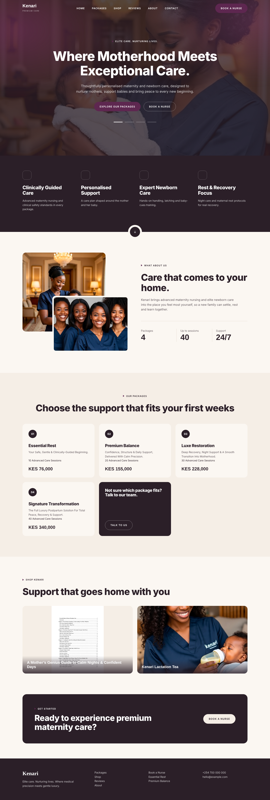
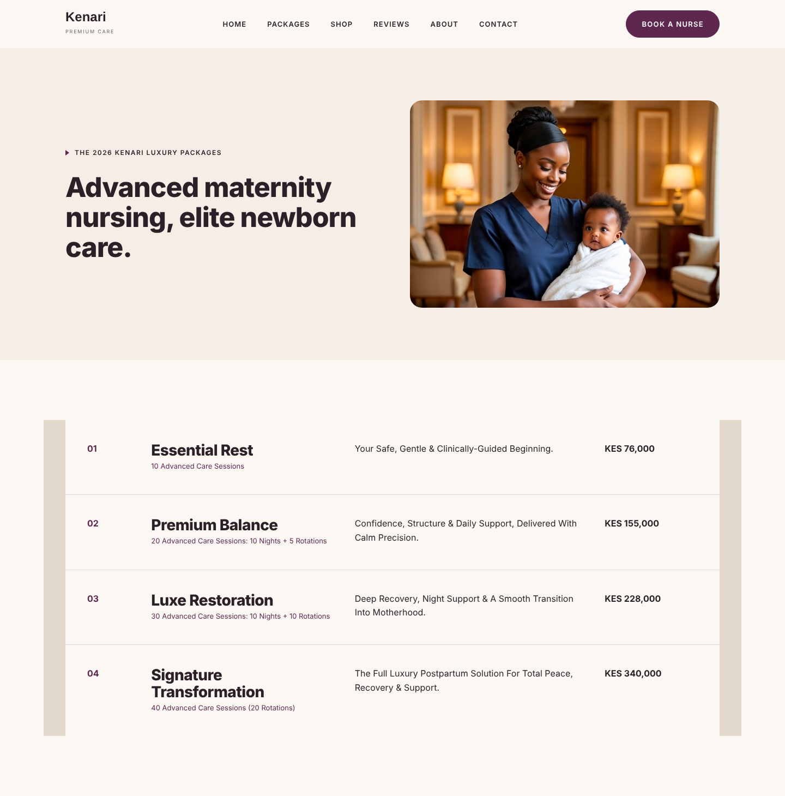

Static design previews rendered in Chromium from the same colours, fonts, layout and photos as the Next.js site. They are not screenshots of the running Next.js build, which could not be installed in the build environment.

